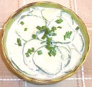

|
Cucumber Salad with GingerEuro - American | ||||
| Servess: Effort: Sched: DoAhead: |
4 salad * 2-1/2 hrs Must |
A refreshing spring salad with just the tiniest bite from ginger. A perfect foil to heavier food. | |||
|
|
1 3 1/2 ----- 1/2 2 1/2 1/2 1/4 ----- |
# oz in --- c T T t t --- |
Cucumbers (1) Onion, white Ginger Root -- Dressing Sour Cream Wine Vinegar, white Sugar, turbinado Salt Pepper, black --- Garnish Chives snipped |
Make - (2-1/2 hrs - 20 min work)
|